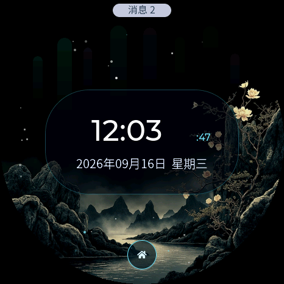
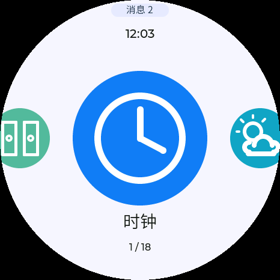

把一块开发板，做成可扩展的圆屏系统
这不是一张概念图。它已经能显示时钟、滑动切换应用、听懂语音、联网生成内容，也能继续装入新的应用。下面从「看得到的成果」讲到「为什么它能工作」。

Actual product
已经跑起来的实际效果
点选右侧条目切换真实设备截图。所有图片均来自同一块圆屏开发板，而不是后期绘制的 UI 稿。

Framebuffer capture
圆形应用启动器
左右滑动切换应用，中央显示当前应用，两侧保留即将切换的预览；上滑进入全部应用。
System map
整体架构：三台“机器”协作
圆屏负责即时交互，服务端负责重计算和联网数据，Mac 助手负责可选的内容管理。即使助手关闭，设备仍能独立连接服务端。
LVGL 绘制界面；触摸驱动把坐标变成点击、上下滑和左右滑。
时钟、动画、游戏、设置、录音、存储和 BLE 都在 ESP32-S3 上运行。
先验证设备证书、Token、请求频率和数据大小，再允许访问内部服务。
只监听本机回环地址，处理天气、作品、语音、生成任务与状态查询。
MiniMax 生成图像、音乐和摘要；SenseVoice 优先识别语音，Whisper 后备。
上传内容、同步统计和管理素材；不是设备启动或联网的必要条件。
How it works
零基础理解开发原理
把它想成一台极小的电脑：芯片是大脑，Flash 是硬盘，PSRAM 是工作台，显示与触摸是它和人的交流方式。
硬件如何连成一台小电脑
每个外设通过总线与 ESP32-S3 通信。
01程序为什么能显示一个界面？
应用先告诉 LVGL：这里放文字、按钮、图片。LVGL 计算哪些像素发生了变化，再让显示驱动把这小块像素送进屏幕。
这样不必每次都重画整张 466×466 画面，速度更快，也更省内存。
02手指滑动是怎么被识别的？
触摸芯片持续报告手指坐标。系统记录“按下点”和“松开点”：横向距离够大就是左右滑，纵向距离够大就是上下滑，移动很小则是点击。
手势先交给桌面或当前应用；系统级返回按键始终保留，避免困在某个应用里。
03为什么生成音乐时还能切换应用？
耗时工作被拆成“提交任务”和“查询结果”。设备发出请求后立即得到任务编号，把状态写入本地；之后由后台定期查询。
界面不需要一直停在等待页。再次打开应用时，它从持久化状态恢复进度或结果。
04动态壁纸为什么不会吃光内存？
关键不是把整段动画全部放入 RAM，而是按帧或按小块解码、复用缓冲区，并只刷新变化区域。需要 DMA 的显示缓冲放在芯片内部可访问的内存；大素材留在 Flash 或 PSRAM。
这正是嵌入式开发和普通网页开发最不同的地方：每一块内存都要知道放在哪里、由谁使用。
05Wi‑Fi、蓝牙和互联网分别做什么？
- Wi‑Fi：让设备连接路由器，再访问服务端。
- BLE：近距离连接电脑，可作为安全键盘等独立功能。
- HTTPS：在互联网中加密数据，并验证通信双方身份。
Flashing explained
烧录到底发生了什么？
“烧录”不是把源代码复制进开发板，而是先编译成芯片能执行的二进制，再通过 USB 串口把它写入 Flash 的指定位置。
Security model
公网服务如何只让设备访问
“绝对安全”并不存在，但可以把攻击面压到很小：服务端同时检查设备证书与高强度 Token，任一项不对都拒绝。
双重设备身份验证
通过后才转发到只监听 127.0.0.1 的业务服务；模型密钥从不下发给设备。
公网只有受 TLS 保护的 8080 入口；Python 服务不直接对外监听。
限制请求体、连接数、频率与超时，降低扫描、爆破和资源耗尽风险。
真实证书、Token、Wi‑Fi 密码和模型密钥被 Git 忽略，本展示页也不包含这些信息。
开发模式尚未启用 Secure Boot 与 Flash Encryption。若设备丢失，专业人员可能读取 Flash；产品化前应执行不可逆硬件加固。
Build your own
怎样增加第 19 个应用
把新应用看成一个有明确生命周期的小模块：创建界面、响应事件、保存状态、退出时释放资源。
定义边界
先决定它完全本地运行，还是需要服务端。联网只传最少数据，不把密钥写进固件。
my_app.c / .h接入启动器
注册中文名称、图标颜色和打开回调。桌面轮播与应用库会按同一清单展示。
app_registry搭建 LVGL 界面
使用圆形安全区，保持文字可读；长列表允许滚动，绝不为“塞下”而缩小所有内容。
lv_obj / event处理后台工作
网络、语音和生成任务不能阻塞 UI。保存任务编号，让用户离开后仍能恢复进度。
FreeRTOS task控制内存
DMA 缓冲放内部 RAM，大素材放 PSRAM / Flash；页面退出时删除定时器和对象。
heap_caps验证再发布
编译、单元测试、截图巡检、真机手势测试；最后关闭开发专用 USB 测试桥。
idf.py buildVerified outcome
交付不是“能编译”就结束
项目同时检查固件、服务端、Mac 助手、离线内容和公开仓库，实际截图再验证一遍圆屏排版与交互状态。
数据对应本次收尾版本。安全结论是“在已知威胁模型和已执行检查下通过”，不是对未来漏洞的绝对保证。
OPEN SOURCE
从成果看懂原理，再从原理开始二次开发。
完整固件、服务端、macOS 助手、测试与部署文档均已整理在公开仓库。